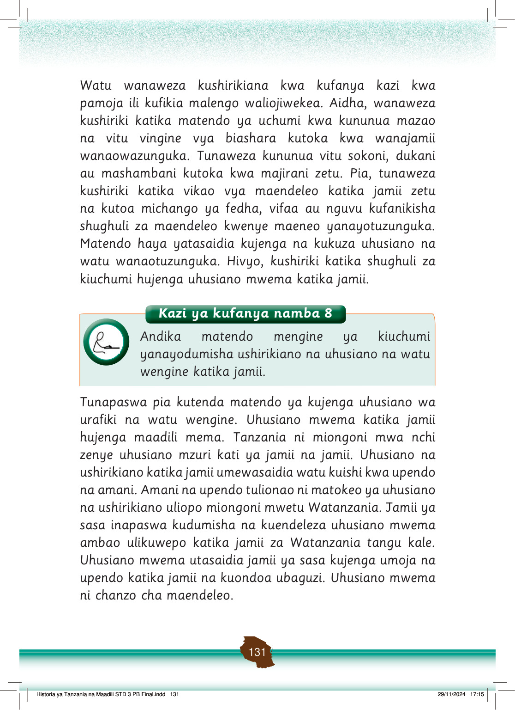

Zoezi la jumla
1.
Orodhesha shughuli tatu (3) za kiuchumi zinazojenga uhusiano katika jamii.
2.
Orodhesha matendo matatu (3) ya kijamii yanayojenga uhusiano katika jamii yako.
3.
Eleza tofauti kati ya uhusiano wa kifamilia na kirafiki.
4.
Eleza mambo ya kuzingatia katika kuchagua marafiki.
5.
Eleza mbinu za kuimarisha uhusiano na ndugu wa karibu na familia.
6.
Eleza umuhimu wa uhusiano wa kirafiki.
7.
Elezea mambo ya kujenga uhusiano mzuri na watu wanaokuzunguka.
Msamiati
Jamaa
watu wenye uhusiano fulani wa kindugu